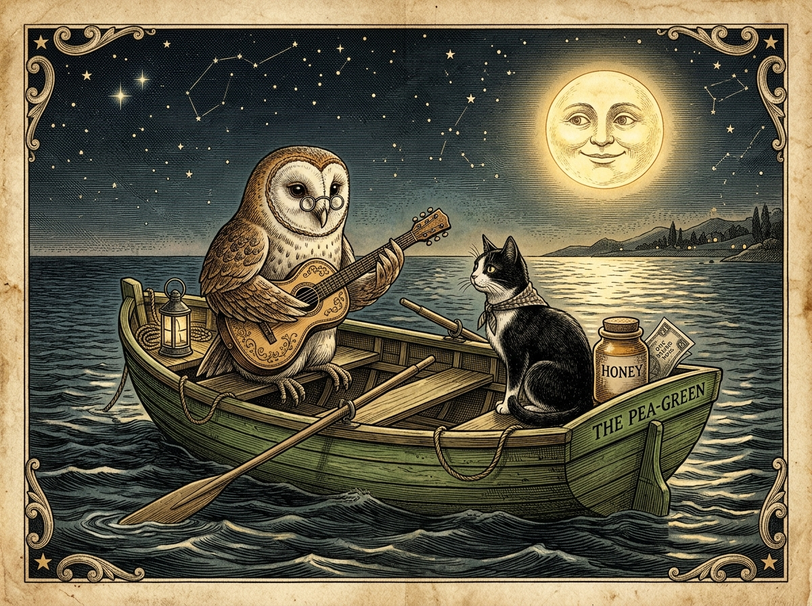

The Architecture of Whimsical Verse
Being a Cheerful Hearthside Study with Rama Lama on Stanza Structure, Echoing Line Breaks, and Internal Rhyme in Mr. Edward Lear’s “The Owl and the Pussy-Cat”
Chapter I — The Master Builder’s Secret
A cheerful fire crackled upon the hearth of the grand library, sending warm ribbons of amber light dancing across the towering mahogany bookshelves. Outside the tall leaded windows, a crisp autumn breeze rustled the golden leaves of the mountain pines, but within the chamber, all was stillness, warmth, and the fragrant aroma of steeped herbal tea and aged leather bindings.
Rama Lama sat comfortably in his deep velvet armchair, his soft curly brown wool glowing in the hearthlight and his curved cream horns sweeping back in quiet dignity. The turquoise bead of his necklace rested peacefully against his chest. Hearing the gentle chime of the door, his dark eyes brightened with genuine delight as he rose to welcome his returning guest.
"Ah, come in, come in, my dear friend!" Rama Lama said in his soothing, melodious voice, offering a courteous bow. "Please, take your seat by the fire and warm your hands with a cup of fresh tea. In our previous gathering, we read aloud Mr. Edward Lear’s delightful verse, The Owl and the Pussy-Cat, simply to enjoy its music and sail along with those two brave companions in their pea-green boat."
He picked up the emerald-cloth volume from the low table and ran his fingers gently along its gilded spine. "Today, however, I have invited you back to examine something even more wondrous: the craftsmanship of the poet. You see, when a master mason builds a cathedral, he does not merely toss stones in a heap; he measures every arch and balances every pillar so the cathedral can soar. A poet does the very same with words! To truly appreciate poetry, a 5th-grade scholar learns to examine two foundational secrets: stanza structure and line division."
Chapter II — Stanza Structure: The Three Rooms of the Voyage
Rama Lama opened the volume to the first page of the poem and laid it flat upon the carved oak lectern. He tapped a gentle hoof beside the opening lines.
"Let us begin with the largest building blocks," Rama Lama explained, his eyes twinkling with pedagogical joy. "In prose—such as the stories and histories you read every day—writers group their sentences into paragraphs. Whenever the scene shifts, time moves forward, or a new idea begins, the author starts a fresh paragraph. In poetry, these groupings are called stanzas. A stanza is simply a little room where a group of related lines live together."
He pointed to the Roman numerals at the head of each section. "Mr. Lear has organized this entire voyage into exactly three main stanzas, labeled I, II, and III. Just like the three acts of a grand play or three chapters of an adventure novel, each stanza marks a major milestone in the story arc:"
The voyage begins in the pea-green boat with honey and money; the Owl looks up to the stars and serenades his beloved with a small guitar.
11 Lines • Act IPussy proposes marriage, they realize they have no ring, voyage for a year and a day to the land of the Bong-tree, and discover the Piggy-wig.
11 Lines • Act IIBuying the ring for a shilling, getting wed by the Turkey on the hill, dining on mince and quince, and dancing hand-in-hand by the moon.
11 Lines • Act III🏛️ The Rule of Uniform Architecture
"Notice something extraordinary about these three stanzas," Rama Lama observed. "Count the lines in Stanza I. There are eleven. Now count Stanza II. Exactly eleven! And Stanza III? Once more, eleven lines. Not ten, not twelve, but a precise, unyielding 11-line length in every single stanza."
"Why did Mr. Lear maintain this uniform length? Because it establishes a predictable, balanced cadence. When a listener hears the first stanza conclude, their ear naturally expects the second stanza to follow the same musical shape. It gives the poem a steady, comforting heartbeat."
Chapter III — Line Division: The Echo at the Edge of the Wave
Rama Lama poured another splash of warm tea into his guest's cup and leaned forward conspiratorially. "Now, let us zoom in from the whole room to examine the individual planks of wood—that is to say, the line division. A poet does not write all the way to the right-hand edge of the paper as a novelist does. Every line break is a deliberate choice."
"Observe how each 11-line stanza is divided into two distinct musical movements:"
| Line Numbers | Poetic Function | How It Affects the Reader |
|---|---|---|
| Lines 1–8 The Long Story Lines |
Carries the narrative plot forward with alternating descriptions and rhyming dialogue. | Creates a steady, rolling wave that carries the story forward smoothly like a boat on calm waters. |
| Lines 9–10 The Two-Word Echo |
Abruptly snaps the rhythm into two short, 2-word bursts repeating a key phrase. | Forces the reader to physically pause, slow down, and hold their breath in suspense. |
| Line 11 The Climax Line |
Delivers the full, triumphant repeating refrain that completes the stanza's thought. | Releases the tension with a delightful, musical flourish and a full emotional punchline. |
"Listen closely to how the endings of all three stanzas mirror each other," Rama Lama said, chanting the final lines with dramatic flair:
🔔 The Three "Echo" Endings
Stanza I: "You are," / "You are!" / "What a beautiful Pussy you are!"
Stanza II: "His nose," / "His nose," / "With a ring at the end of his nose."
Stanza III: "The moon," / "The moon," / "They danced by the light of the moon."
"Why did the poet break the lines in this peculiar manner?" Rama Lama asked with a warm smile. "If he had printed those words all on a single continuous line, you would read straight past them without noticing. But by placing just two small words on line 9 and two small words on line 10, your eye must leap from line to line. Your voice is compelled to pause. It sounds like an echo calling across a misty valley, or an actor on stage pausing right before delivering the funniest line of the play! That brief hesitation makes the final line ring out with joyful triumph."

Chapter IV — Hidden Bells: Internal Rhymes Inside the Lines
Rama Lama tapped his quill gently against the mahogany table. "Most young scholars are already familiar with end rhyme—words that rhyme at the very ends of separate lines, such as boat and note, or guitar and are. But Mr. Lear had a secret chime hidden within his toolbox: internal rhyme."
"An internal rhyme occurs when two rhyming words are tucked inside the exact same line of poetry rather than separated across different lines. It is like discovering a secret silver bell ringing right in the middle of a sentence!"
"Let us examine the four sparkling examples Mr. Lear wove into this poem:"
✨ Four Masterpieces of Internal Rhyme
1. Stanza I, Line 3:
"They took some honey, and plenty of money"
✦ The rhyme between honey and money skips merrily inside the single third line.
2. Stanza II, Line 1:
"Pussy said to the Owl, 'You elegant fowl!'"
✦ Pussy addresses the Owl and immediately compliments the fowl in the opening breath.
3. Stanza III, Line 1:
"'Dear pig, are you willing to sell for one shilling'"
✦ The playful match between willing and shilling establishes the bargain instantly.
4. Stanza III, Line 5:
"They dinèd on mince, and slices of quince"
✦ The wedding feast menu pairs mince with the tart fruit of the quince in quick succession.
"Do you hear how those internal rhymes make the line skip forward?" Rama Lama asked. "If the rhyme were placed at the end of the line, you would wait several beats to hear the match. But by keeping both rhyming words inside a single long line, the speed feels lively, brisk, and playful—exactly like a jaunty nursery rhyme or a merry reel played upon a small guitar!"
Chapter V — The Master Text of the Poem
"Now that we have uncovered all three secret mechanisms—the three 11-line stanzas, the dramatic two-word echo line breaks, and the internal rhymes—it is time for the true test," Rama Lama said, his eyes alight with encouragement as he turned the volume toward his guest.
"Poetry was never meant to stay silent upon the parchment; it was born to be spoken, heard, and felt in the breath! I would like you to sit tall, take a steady breath, and read the entire poem aloud from beginning to end. As your voice carries each line, feel the pauses at lines nine and ten, chime the internal rhymes, and let the cadence roll like the gentle waves beneath the pea-green boat."
The Owl and the Pussy-Cat
THE Owl and the Pussy-Cat went to sea
In a beautiful pea-green boat,
They took some honey, and plenty of money
Wrapped up in a five-pound note.
The Owl looked up to the stars above,
And sang to a small guitar,
"O lovely Pussy! O Pussy, my love,
What a beautiful Pussy you are,
You are,
You are!
What a beautiful Pussy you are!"
Pussy said to the Owl, "You elegant fowl!
How charmingly sweet you sing!
O let us be married! too long we have tarried:
But what shall we do for a ring?"
They sailed away, for a year and a day,
To the land where the Bong-tree grows
And there in a wood a Piggy-wig stood
With a ring at the end of his nose,
His nose,
His nose,
With a ring at the end of his nose.
"Dear pig, are you willing to sell for one shilling
Your ring?" Said the Piggy, "I will."
So they took it away, and were married next day
By the Turkey who lives on the hill.
They dinèd on mince, and slices of quince,
Which they ate with a runcible spoon;
And hand in hand, on the edge of the sand,
They danced by the light of the moon,
The moon,
The moon,
They danced by the light of the moon.
Chapter VI — Rama Lama’s Scholar’s Notebook
Rama Lama gently set down the volume, his face aglow with warmth and satisfaction. He folded his hands upon his lap and looked warmly into the eyes of his guest.
"You see, my young friend," Rama Lama said gently, "poetic structure is never an accident. A great poet organizes the page so that when you read the words, your voice cannot help but dance. Whenever you encounter a new poem in your studies, look for its architecture: how many stanzas form the building, how the line breaks govern your breath, and what hidden chimes ring within each line."
📜 5th-Grade Scholar's Poetic Analysis Reference
- Three Unified Stanzas (Roman Numerals I, II, III): Each stanza acts as a narrative paragraph representing a major phase of the story arc (The Voyage & Serenade → The Proposal & Quest → The Wedding & Feast).
- Uniform 11-Line Symmetry: Every stanza is built of exactly eleven lines, creating a reliable, harmonious rhythm and balance.
- Story Lines vs. Echo Refrain: Lines 1–8 propel the plot forward, while Lines 9 and 10 break into two-word fragments that force the reader to pause before the final punchline of Line 11.
- Internal Rhyme Momentum: Rhyme pairs nestled inside single lines (honey/money, Owl/fowl, willing/shilling, mince/quince) create a lively, brisk nursery-rhyme cadence.
"Thank you for sharing this quiet hour of study with me," Rama Lama concluded with a gentle nod. "Take these lessons with you into your own writing, and you shall soon find that words, when carefully structured, can carry you to any distant shore."